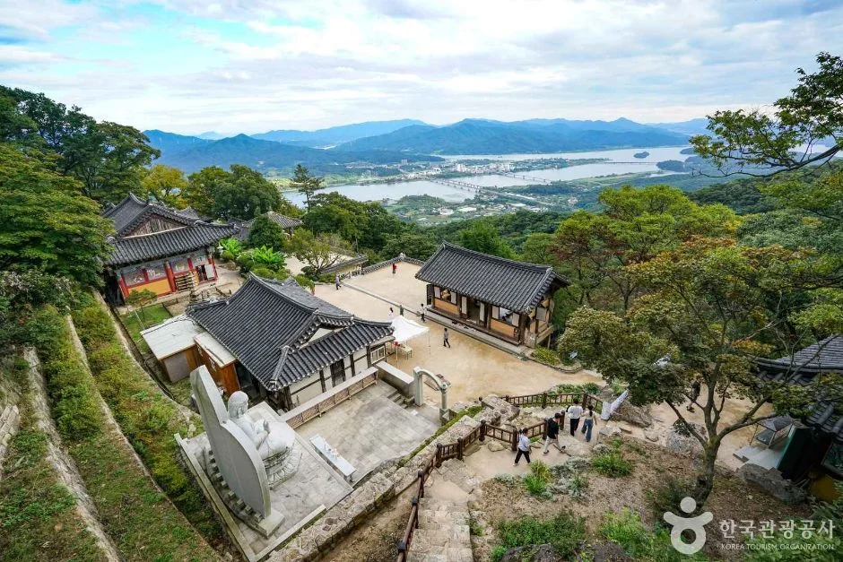
▲ 수종사 경내 위에서 내려다본 전경. 촬영 시기는 자료에 없다 ⓒ 한국관광공사 · 공공누리 제3유형(변경금지)
"수종사는 차로 올라갈 수 있다던데, 평일에 가도 될까?" 이 글은 2026년 10월 21일 기준으로 수종사 누리집 공지와 한국관광공사·경기도 자료를 모아, 올라가는 방법과 주차, 삼정헌 다도실, 두물머리 전망, 일출·일몰 시각을 정리했다. 가장 먼저 알아둘 점은 수종사가 2026년 9월 28일 공지로 평일(월~금) 일반 차량의 진입을 제한하고 있다는 것이다. 수종사 진입 안내 공지 바로가기
수종사는 운길산 중턱에 있어 올라가는 수고가 있어도 발아래로 북한강과 남한강이 만나는 두물머리가 펼쳐진다. 그래서 "차 마시러 잠깐 들를까" 하는 마음으로 오는 사람이 많은데, 평일과 주말의 접근 방법이 달라졌다.
💡 먼저 결론
수종사는 2026-09-28 공지에서 진입로 안전 공사를 이유로 평일(월~금) 일반 차량 진입을 제한하고 주말(토~일)에는 허용한다고 안내했다. 한국관광공사는 주차장에서 절까지 400m, 도보 약 15분이라고 소개하며 입장은 상시 개방·연중무휴, 주차는 무료로 적고 있다. 다도실 삼정헌은 찻값을 받지 않는다고 경기도가 소개했지만, 운영시간은 공식 자료에서 확인하지 못했다.
1. 가장 중요한 변수 — 평일 일반 차량 진입 제한
수종사 누리집 공지(2026-09-28 게시)는 진입로 안전 공사로 일반 차량의 진입을 평일(월~금)에는 제한하고 주말(토~일)에는 허용한다고 밝혔다. 누리집 첫 화면의 차량통행정보 칸에도 이 글을 쓴 2026-10-21(수)에 통행 가능 여부가 X, 안내글이 "공사로 통행불가"로 표시돼 있었다. 수종사 누리집 바로가기
공지에는 공사 기간과 평일에 어디까지 걸어 올라가야 하는지가 적혀 있지 않다. 다만 한 여행 매체(아던트뉴스)는 진입로 정비 공사가 2026년 8월 15일부터 12월 14일까지라고 보도하면서 현장 여건에 따라 달라질 수 있다고 덧붙였다. 이 기간은 수종사 공지나 남양주시 고시에서 확인하지 못했으므로 참고용으로만 보자. 그래서 평일에는 대중교통이나 걸어서 오르는 계획을 기본으로 세우고, 차를 가져갈 거라면 출발 전에 종무소(031-576-8411)에 먼저 물어보는 편이 안전하다.
| 구분 | 내용 | 근거 |
|---|---|---|
| 평일(월~금) | 일반 차량 진입 제한 | 수종사 공지 2026-09-28 |
| 주말(토~일) | 일반 차량 진입 가능 | 수종사 공지 2026-09-28 |
| 2026-10-21(수) 누리집 표시 | 통행 가능 여부 X, "공사로 통행불가" | 수종사 누리집 첫 화면 |
| 공사 종료 시점 | 수종사 공지에는 기간이 없음. 한 여행 매체(아던트뉴스)는 2026-08-15~12-14 진입로 정비 공사라고 보도했으나 남양주시·수종사 공지로는 확인하지 못함 | 2026-10-21 기준, 변경 가능 |
| 평일 대체 주차 지점 | 공식 공지에 없음. 같은 매체는 진입로 초입 주차 후 도보 이동, 사찰 승합차는 노약자·장애인·신도 우선이라고 전함 | 일반 방문객용 셔틀은 아님 |
| 결빙 등 기상 통제 | 기상·도로 상황에 따라 도로 통제가 있어 누리집 확인을 권장 | 수종사 오시는 길 안내 |
표에서 눈여겨볼 점은 공지에 공사 기간이 없다는 것이다. 공사 종료 시점과 평일 대체 주차 지점이 모두 공식 확인이 되지 않아, 평일 방문은 출발 전에 누리집 표시를 보고 판단해야 한다.
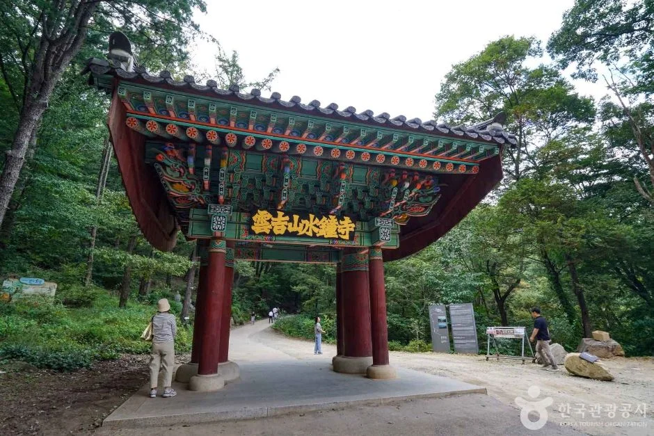
▲ 일주문 앞 공간. 촬영 시기는 자료에 없고, 나뭇잎 색으로 보아 녹음이 짙은 때의 사진으로 보인다. ⓒ 한국관광공사 · 공공누리 제3유형(변경금지)
2. 가는 길 — 운길산역에서 걸어서, 버스로, 자가용으로
수종사 누리집 "오시는 길"은 경의중앙선 운길산역 2번 출구로 나와 우측으로 약 100m 이동한 뒤 철교 밑에서 우회전해 수종사 방향으로 걷는 방법(약 1시간 소요)을 안내한다. 버스는 운길산역(진중삼거리 방면) 정류장에서 88-3번, 또는 운길산역(조안면체육공원 방면)에서 58·63·땡큐58-3번을 타고 "수종사입구·조안보건지소 앞"에서 내린 뒤 걸어서 약 45분이라고 적혀 있다. 수종사 오시는 길 바로가기
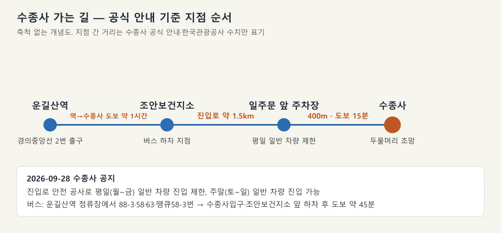
▲ 수종사 공식 안내와 한국관광공사 수치로 지점 순서를 나타낸 개념도. 축척은 없다. 카프리즘 제작, 출처=수종사·한국관광공사
| 방법 | 공식 안내 내용 | 비고 |
|---|---|---|
| 도보(운길산역) | 운길산역 2번 출구 → 철교 밑 우회전 → 수종사 방향, 약 1시간 | 수종사 누리집 |
| 버스 | 88-3·58·63·땡큐58-3번, "수종사입구·조안보건지소 앞" 하차 후 도보 약 45분 | 배차 간격은 확인하지 못함 |
| 자가용(진입로) | 조안보건지소에서 마을 안쪽으로 진입 → 두물장어 앞 삼거리 우회전 → 진입로 약 1.5km 직진 → 일주문 앞 주차장 | 평일 일반 차량 제한 중 |
| 자가용(6번 국도·수도권제2순환) | 조안IC·조안나들목에서 조안보건지소 방향으로 이동 | 방향별 순서는 누리집 참고 |
표에서 평일 제한 표시가 붙은 것은 자가용 진입로뿐이다. 도보와 버스 안내에는 그런 표시가 없지만, 도보 약 1시간·버스 하차 후 도보 약 45분이라는 시간 부담은 일정에 반영해야 한다.
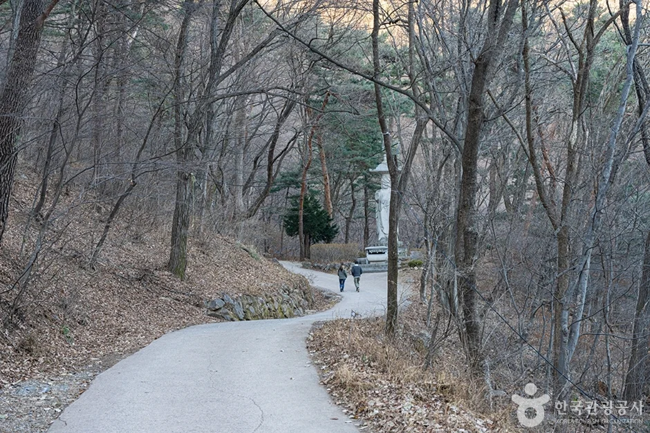
▲ 운길산 탐방로. 잎이 진 나무가 보이지만 촬영 시기는 자료에 없다. 한국관광공사 운길산 항목 사진이다. ⓒ 한국관광공사 · 공공누리 제3유형(변경금지)
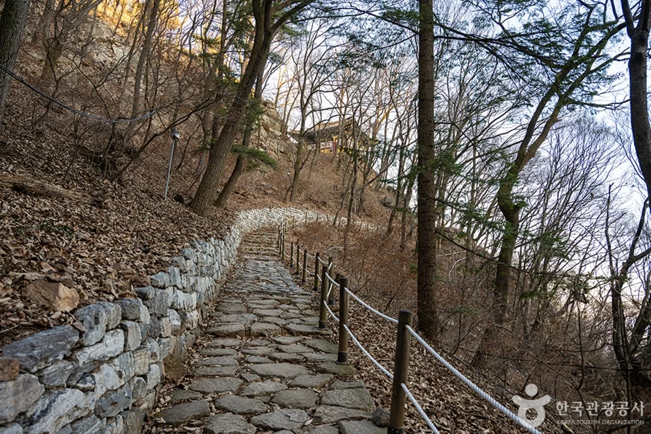
▲ 운길산 산길의 돌계단. 낙엽이 쌓인 모습이지만 촬영 시기는 자료에 없다. ⓒ 한국관광공사 · 공공누리 제3유형(변경금지)
자가용 경로의 출발점은 두물머리·세미원이 있는 양평 쪽과 가깝지만, 행정구역은 남양주시 조안면이다. 양평 쪽 두물머리와 세미원 운영 정보는 양평 세미원·두물머리 가을 자차 코스 기사에서 따로 다뤘다.
3. 주차와 걷는 거리 — 400m, 도보 15분
한국관광공사 소개에 따르면 수종사 주차장에서 절까지는 400m이고 도보로 15분 정도 걸린다. 같은 기관의 이용 정보에는 상시 개방, 연중무휴, 주차 가능(요금 무료)으로 표기돼 있다. 수종사 누리집은 진입로 끝 일주문 앞에 주차장이 있다고 안내한다. 대한민국 구석구석 바로가기
주차 가능 대수는 공식 자료에서 확인하지 못했다. 평일에 일반 차량이 올라가지 못하는 동안 주차를 어디에 해야 하는지도 공지에 없다. 수종사는 법회·제사 같은 행사 날에 운길산역·청목농원(진중리 67-1 주차장)에서 일주문까지 8시 30분~10시 30분 사이 차량을 운행한다고 따로 안내하는데, 일반 방문객용 평일 셔틀이라고는 적혀 있지 않다.
| 항목 | 확인한 내용 | 비고 |
|---|---|---|
| 주차 요금 | 무료 | 한국관광공사 정보 기준 |
| 주차장→절 | 400m, 도보 약 15분 | 한국관광공사 |
| 행사일 차량 운행 | 운길산역·청목농원~일주문, 행사 당일 08:30~10:30 | 수종사 안내(2025-08-06 게시), 일반 방문 셔틀 아님 |
| 주차 가능 대수 | 확인하지 못함 | — |
| 성수기 혼잡 정도 | 공식 수치 없음 | — |
표에서 확인된 것은 무료 주차와 주차장에서 절까지 400m·도보 약 15분이 전부이고, 주차 가능 대수와 성수기 혼잡은 공식 수치가 없다. 그래서 주차 여유는 장담할 수 없고, 주차 뒤에도 걷는 거리가 남는다는 점을 감안하는 편이 낫다.
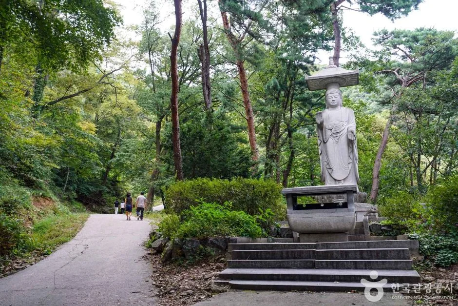
▲ 경내로 오르는 길에 서 있는 석조 불상. 촬영 시기는 자료에 없다. ⓒ 한국관광공사 · 공공누리 제3유형(변경금지)
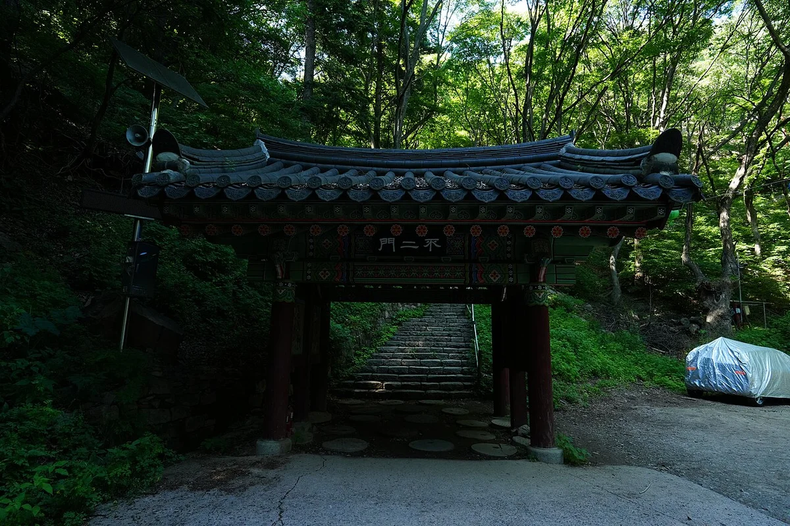
▲ 2026년 5월 30일 촬영한 불이문. 문 안쪽으로 계단이 이어지며 신록이 짙은 모습이다. ⓒ Sadopaul · CC BY-SA 4.0 · Wikimedia Commons
4. 전망 — 서거정이 "동방 제일"이라 부른 두물머리 조망
수종사는 조계종 봉선사의 말사로, 한국관광공사는 서거정이 동방 사찰 중 제일의 전망이라 격찬한 곳이라고 소개한다. 북한강과 남한강이 합류하는 양수리 풍경과 인근 산까지 보인다는 설명이다. 경기도 소개 글은 수종사를 국가 명승 제109호로 적고 있는데, 문화재청은 2014년 1월 8일 "남양주 운길산 수종사 일원"을 명승으로 지정 예고하면서 수종사에서 두물머리를, 운길산 정상에서 한강과 서울 북동쪽 산지를 조망할 수 있다는 점을 의의로 들었다.
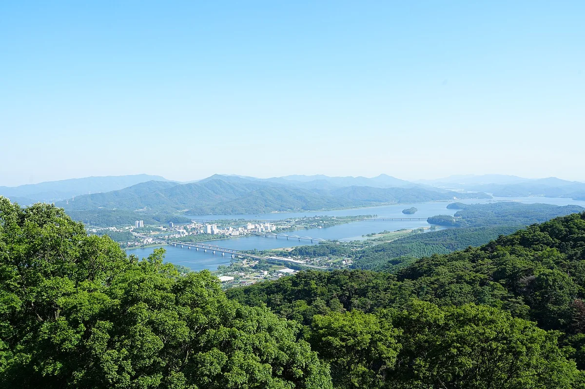
▲ 2026년 5월 30일 수종사 일대에서 내려다본 한강 쪽 조망. 먼 산이 옅은 안개에 싸여 있다. 계절과 날씨에 따라 보이는 모습이 달라진다. ⓒ Sadopaul · CC BY-SA 4.0 · Wikimedia Commons
정약용은 수종사에서 즐기는 풍경으로 석양, 햇빛이 비쳐 드는 아침, 달밤을 꼽았다고 경기도 소개 글이 전한다. 다만 어느 자리에서 보는 풍경이 가장 좋은지, 전망대 위치가 따로 지정돼 있는지는 공식 안내에서 확인하지 못했다.
5. 삼정헌 — 찻값 없이 직접 우려 마시는 다도실
경기도 소개 글에 따르면 삼정헌은 수종사의 다도실이다. 테이블마다 다기가 놓여 있어 직접 차를 우려 마실 수 있고, 다도 순서가 안내돼 있으며, 전면 통창으로 두물머리가 내려다보인다. 찻값은 받지 않는다고 적혀 있다. 수종사 누리집 연혁은 1999년부터 응진전, 선불장, 삼정헌, 경학원, 미륵불, 일주문 등을 세워 사격을 갖췄다고 설명한다. 경기도 소개 글 바로가기
수종사가 차와 인연이 깊은 이유도 연혁에 있다. 누리집은 조선 후기 초의, 다산, 추사를 비롯한 다선과 묵객들이 당색과 신분을 따지지 않고 모여 담론을 나눈 곳이라고 소개하며, 경기도 글은 초의선사가 이곳 물맛을 "천하일품"이라 평했다고 전한다.
| 항목 | 확인한 내용 | 근거 |
|---|---|---|
| 성격 | 다도실, 직접 우려 마시는 방식 | 경기도 소개 글 |
| 찻값 | 받지 않음(소개 글 기준) | 경기도 소개 글 |
| 전망 | 전면 통창으로 두물머리 조망 | 경기도 소개 글 |
| 운영시간·휴무·인원 제한 | 공식 자료에서 확인하지 못함 | 종무소 031-576-8411 확인 |
| 다도 체험 프로그램·예약 | 확인하지 못함 | — |
표의 확인 항목은 성격·찻값·전망까지이고, 운영시간·휴무·예약은 모두 확인하지 못했다. 차 마시기를 일정의 중심에 두려면 종무소 031-576-8411에 먼저 문의하는 편이 안전하다.
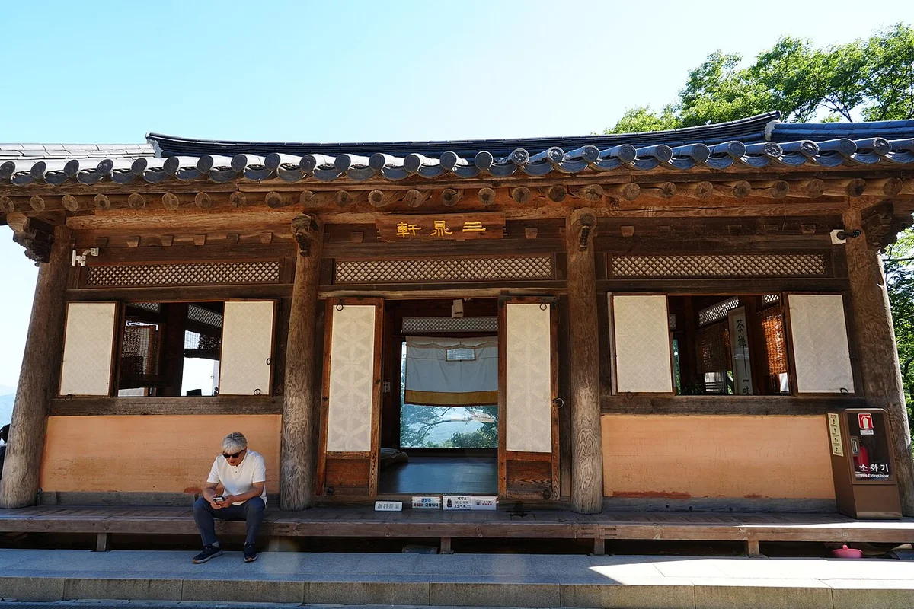
▲ 2026년 5월 30일 촬영한 삼정헌 외관. 위 표의 통창·다기 설명은 경기도 소개 글 기준이며 사진은 건물 바깥 모습이다. ⓒ Sadopaul · CC BY-SA 4.0 · Wikimedia Commons
차를 마시는 장소인 만큼 법회가 있는 날이나 기도 시간에는 경내가 붐비거나 조용해야 할 수 있다. 수종사는 새벽 예불 5시, 사시 불공 10시 30분, 저녁 예불 7시(동절기 변동 가능)라고 안내하고, 타종은 오전 5시 30분과 오후 7시에 매일 한다고 적었다. 일요 정기 법회는 매주 일요일 오전 10시 30분 대웅전에서 열린다고 적었다.
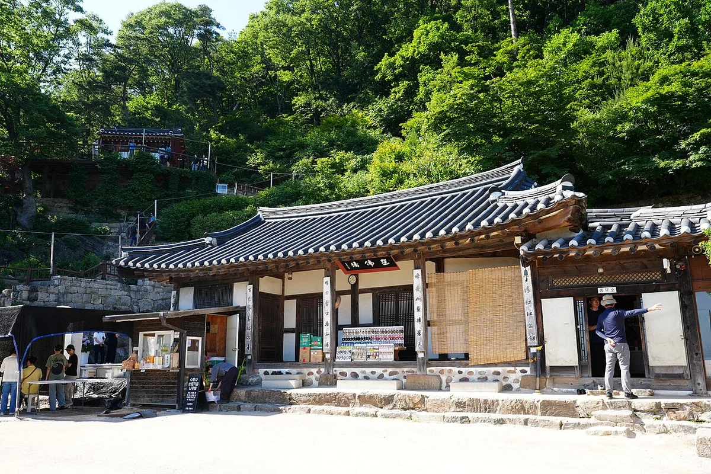
▲ 2026년 5월 30일 촬영한 선불장 일대. 연혁상 1999년 이후 세운 전각 중 하나로 소개된다. ⓒ Sadopaul · CC BY-SA 4.0 · Wikimedia Commons
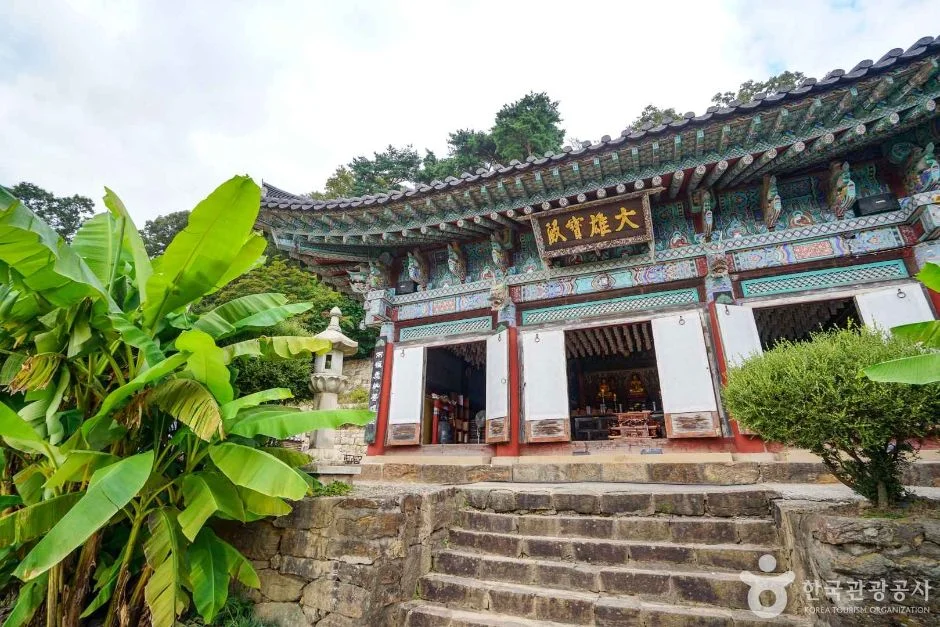
▲ 수종사 대웅보전 앞. 현재 전각은 6.25전쟁 때 소실된 것을 1974년 혜광 화상이 중건한 것이라고 수종사가 안내한다. ⓒ 한국관광공사 · 공공누리 제3유형(변경금지)
6. 경내에서 볼 것 — 보물 석탑 두 기와 500년 은행나무
한국관광공사는 중요 문화유산으로 보물로 지정된 수종사 사리탑과 오층석탑이 있다고 소개한다. 경기도 소개 글 기준으로 팔각오층석탑은 보물 제1808호, 정혜옹주 사리탑은 보물 제2013호다. 한국민족문화대백과는 팔각오층석탑이 1957년 해체수리 때 불상 19구가 나왔고 2013년 9월 4일 보물로 지정됐다고 전한다.
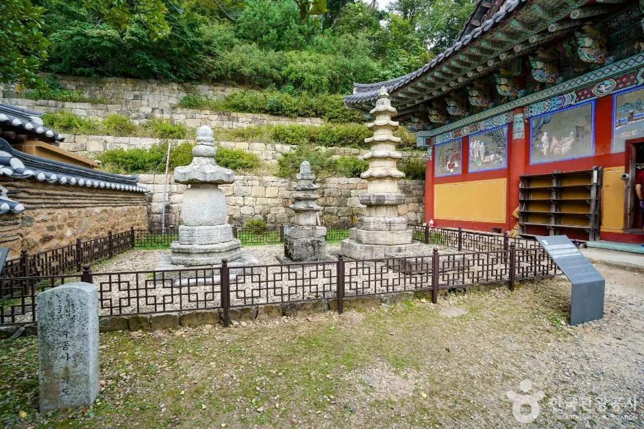
▲ 대웅보전 옆 석탑이 모인 마당. 어느 탑이 어느 보물인지는 사진 설명에 없다. ⓒ 한국관광공사 · 공공누리 제3유형(변경금지)
| 항목 | 내용 | 근거 |
|---|---|---|
| 세조 전설 | 두물머리에서 하룻밤을 보낸 세조가 종소리를 따라가 보니 바위 굴의 18나한상과 물 떨어지는 소리가 있었고, 이에 절을 지어 수종사라 했다고 전한다 | 한국관광공사·수종사 연혁 |
| 팔각오층석탑 | 보물 제1808호, 1493년 건립·1628년 중수 | 경기도·한국민족문화대백과 |
| 정혜옹주 사리탑 | 보물 제2013호, 1439년 왕실 발원 | 경기도·문화재청 보도 |
| 은행나무 | 세조가 하사했다는 500년 수령의 아름드리 은행나무 | 한국관광공사 |
| 창건 시기 | 신라 때 처음 지어졌다고 전해지나 자세한 연혁은 알 수 없음 | 한국관광공사 |
표의 연대는 석탑 1493년·사리탑 1439년처럼 건립 시기가 뚜렷한 것과, 세조 전설·창건 시기처럼 "전한다"로만 남은 것으로 나뉜다. 전설과 기록을 구분해 읽으면 경내 설명을 볼 때 덜 헷갈린다.
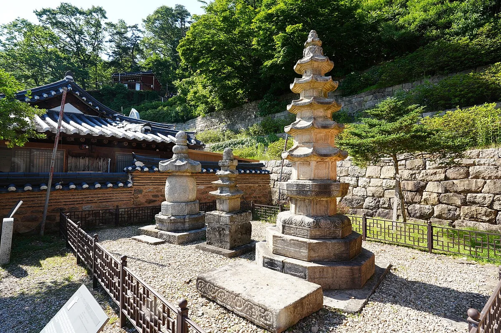
▲ 2026년 5월 30일 촬영한 경내 석탑 마당. 어느 탑이 어느 보물인지는 사진만으로 구분하지 않았다. ⓒ Sadopaul · CC BY-SA 4.0 · Wikimedia Commons
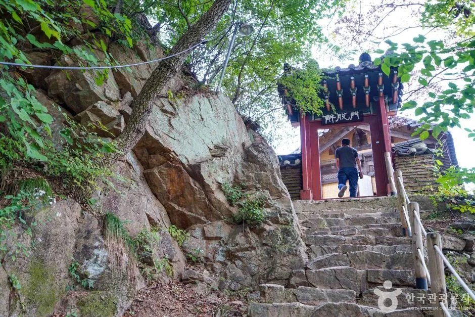
▲ 바위 곁 계단 위의 종각. 수종사 타종은 매일 아침·저녁 이뤄진다고 안내된다. 촬영 시기는 자료에 없다. ⓒ 한국관광공사 · 공공누리 제3유형(변경금지)
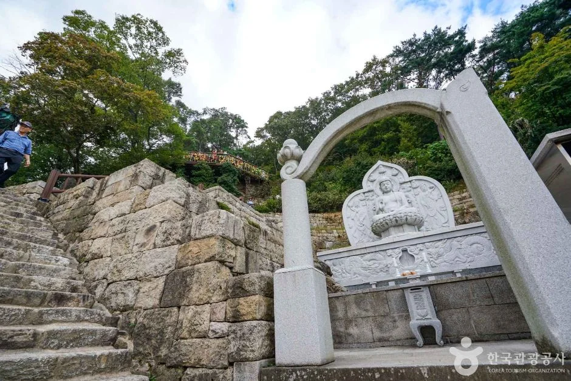
▲ 석축 계단 옆 석조 불상 조형. 정확한 명칭과 위치는 사진 설명에 없다. ⓒ 한국관광공사 · 공공누리 제3유형(변경금지)
은행나무 단풍 비교 대상으로는 양평 용문사 천년 은행나무 기사가 있다. 노랗게 물드는 시기는 해마다 달라 공식 예측 수치가 없으므로 2026 단풍 절정 시기 자료 기사를 함께 보자.
7. 일출·일몰·운해 — 시각은 서울 기준, 운해는 시기 확답 없음
한국천문연구원 월별 해·달 출몰시각에는 남양주가 따로 없어 서울 기준만 확인된다. 아래 표는 서울 기준이라 남양주와는 1~2분 안팎 차이가 날 수 있다. 한국천문연구원 출몰시각 바로가기
| 날짜 | 일출 | 일몰 |
|---|---|---|
| 2026-10-21 | 06:46 | 17:47 |
| 2026-10-31 | 06:56 | 17:35 |
| 2026-11-15 | 07:11 | 17:22 |
| 2026-11-30 | 07:27 | 17:14 |
| 2026-12-15 | 07:39 | 17:15 |
| 2026-12-30 | 07:46 | 17:23 |
문화재청은 수종사에서 내려다보는 두물머리 운해를 이곳의 대표 경관으로 꼽았고, 경기도 소개 글도 일출·일몰·운해까지 하루 종일 볼거리가 있다고 적었다. 그러나 운해가 자주 끼는 달, 날씨 조건, 확률은 공식 자료에 없다. 이른 시간에 출입이 가능한지도 확인하지 못했으므로, 일출을 보려는 계획이라면 종무소에 먼저 물어보자.
8. 반나절 코스 — 수종사 다음엔 두물머리와 다산 유적지
한국관광공사 근거리 정보에서 수종사와 가까운 곳은 양수리(양평 두물머리 일대)와 세미원이다. 같은 조안면에는 정약용유적지와 다산생태공원이 있어 함께 엮기 좋다. 정약용은 조안면 능내리에서 나고 자랐고 초의선사, 추사와 수종사에서 차를 즐겼다고 전해진다.
| 순서 | 할 일 | 체크 |
|---|---|---|
| 오전 | 운길산역 또는 조안보건지소에서 출발해 수종사 오르기 | 평일 차량 제한, 도보 1시간·45분 안내 |
| 정오 전후 | 삼정헌에서 두물머리 보며 차 마시기 | 운영시간 사전 확인 |
| 오후 | 양평 두물머리·세미원 | 관련 기사 |
| 선택 | 정약용유적지·다산생태공원 | 한국관광공사 소개 장소 |
표의 순서는 어디까지나 예시다. 도보 1시간·45분이라는 이동 시간과 삼정헌 운영시간 미확인이 변수라서, 평일에 차량 제한이 이어지면 오후 일정(두물머리·세미원)은 줄여야 할 수 있다.
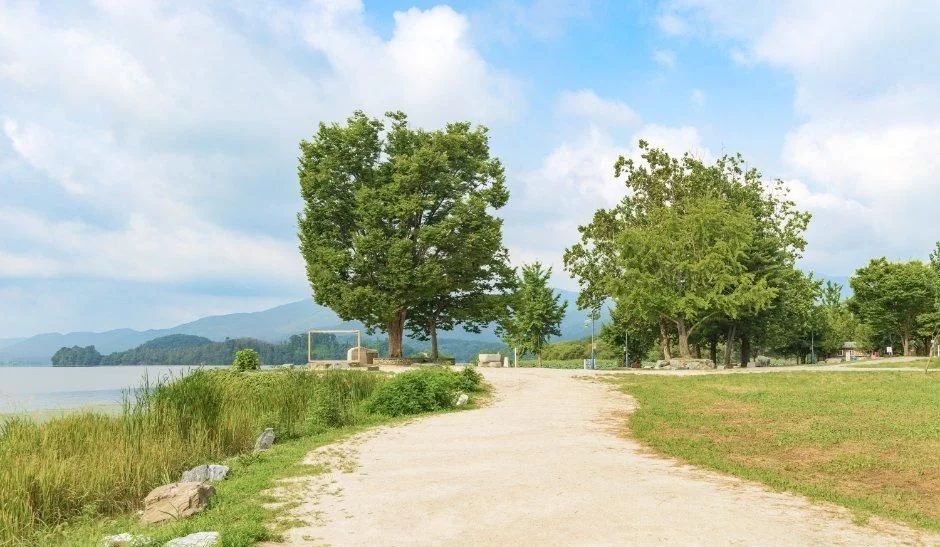
▲ 강가를 따라 난 길. 수종사가 아니라 인근 양평 두물머리의 모습이다. 촬영 시기는 자료에 없다. ⓒ 한국관광공사 · 공공누리 제1유형
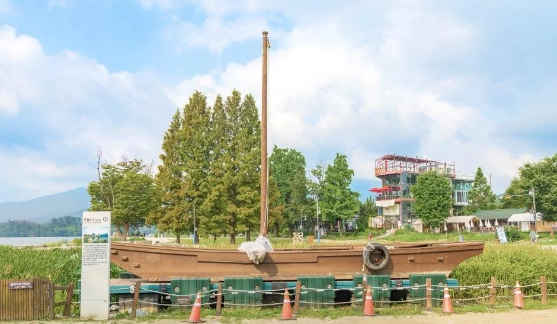
▲ 양평 두물머리의 돛배 전시. 수종사 사진이 아니라 인근 두물머리의 모습이다. ⓒ 한국관광공사 · 공공누리 제1유형
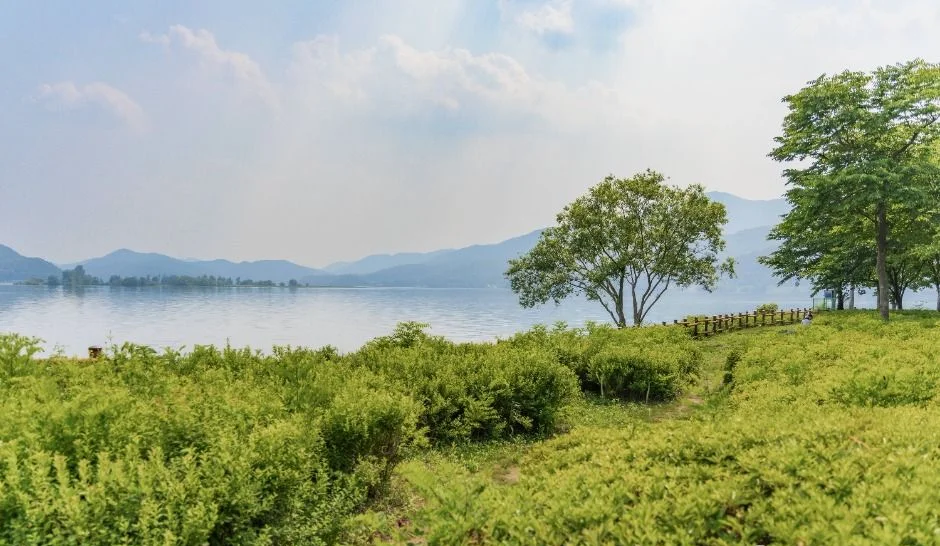
▲ 남양주 다산생태공원 일대의 강 풍경. 수종사가 아니라 같은 조안면의 인근 명소 사진이다. ⓒ 한국관광공사 · 공공누리 제1유형
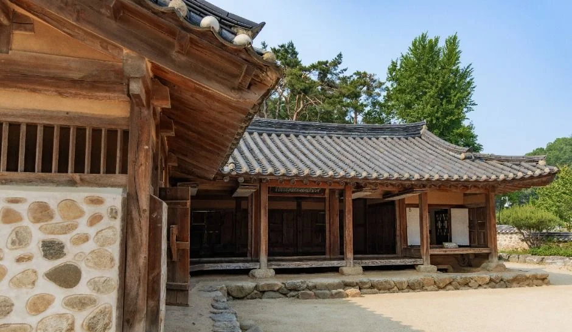
▲ 정약용유적지의 한옥. 수종사가 아니라 같은 조안면의 인근 명소 사진이다. ⓒ 한국관광공사 · 공공누리 제1유형
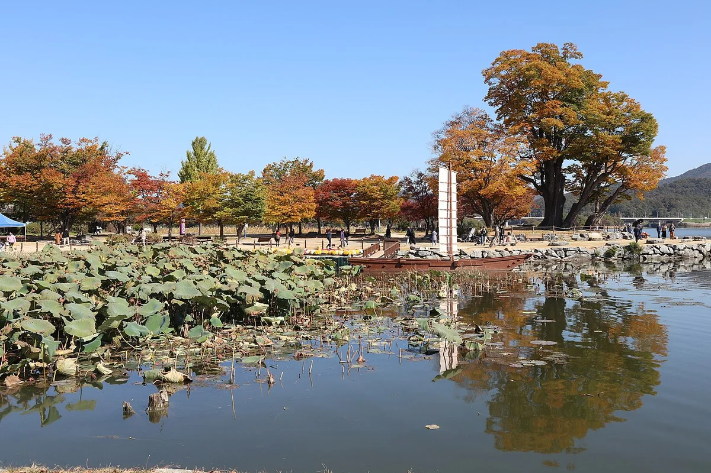
▲ 2022년 10월 19일 촬영한 양평 두물머리. 주황빛으로 물든 나무와 연잎이 물에 비친다. 수종사가 아니라 인근 명소 사진이다. ⓒ S h y numis · CC BY-SA 4.0 · Wikimedia Commons
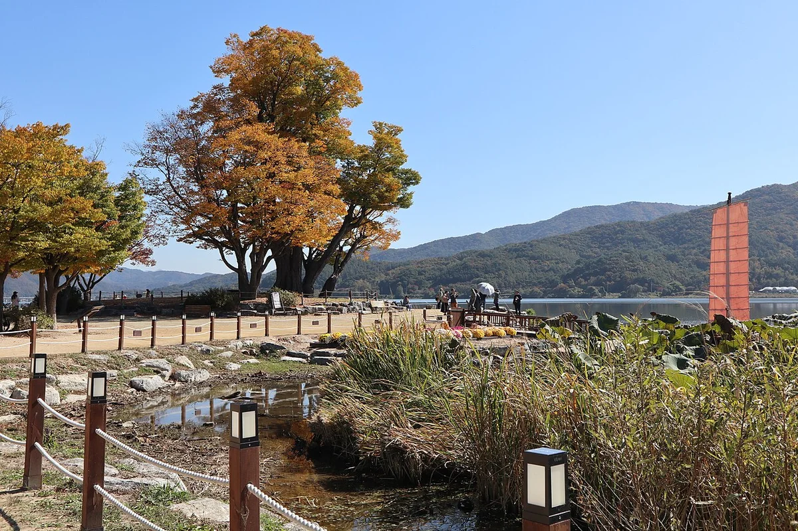
▲ 2022년 10월 19일 촬영한 두물머리의 나무와 돛배. 인근 명소 사진이며, 단풍 시기는 해마다 다르다. ⓒ S h y numis · CC BY-SA 4.0 · Wikimedia Commons
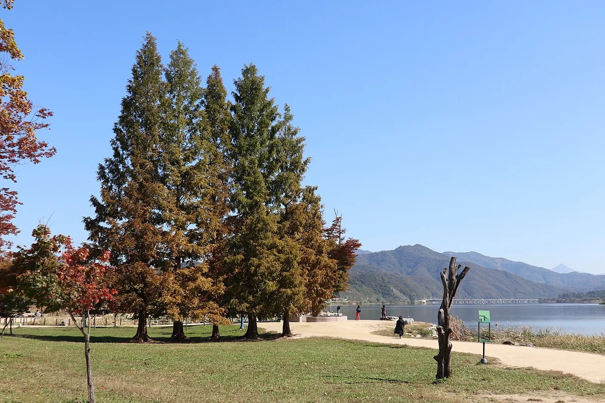
▲ 2022년 10월 19일 촬영한 두물머리 잔디밭과 나무. 인근 명소 사진이다. ⓒ S h y numis · CC BY-SA 4.0 · Wikimedia Commons
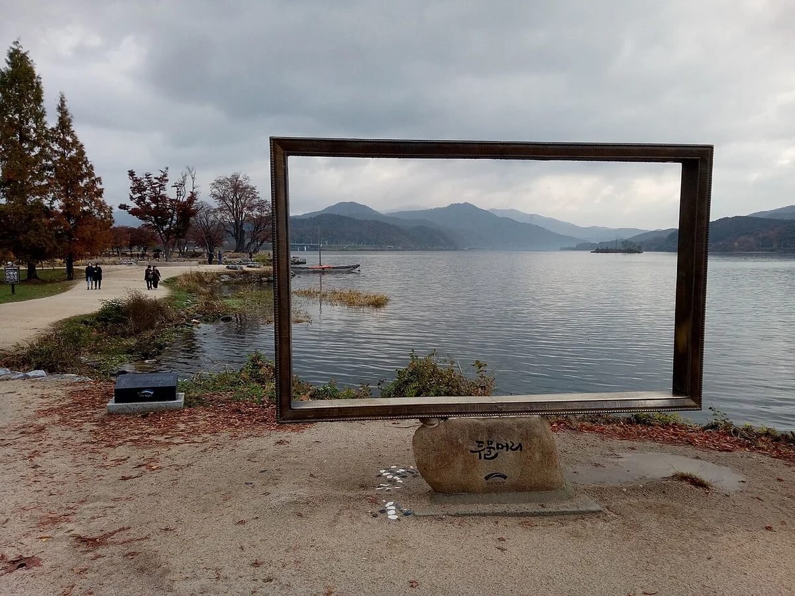
▲ 2019년 11월 11일 촬영한 두물머리 액자 조형물. 낙엽 진 길이 보이는 인근 명소 사진이다. ⓒ Foxy1219 · CC BY-SA 4.0 · Wikimedia Commons
인근 팔당 쪽 드라이브는 팔당 코스모스 드라이브 기사에서 따로 정리했다.
✅ 출발 전 체크
1) 평일(월~금) 일반 차량 진입 제한, 주말은 가능(수종사 공지 2026-09-28) 2) 주차장에서 절까지 400m·도보 약 15분, 입장·주차 무료는 한국관광공사 정보 기준 3) 삼정헌은 찻값을 받지 않는다고 소개되지만 운영시간은 종무소(031-576-8411)에 확인 4) 일출·운해는 시기 확답이 없어 날씨 확인 필요 5) 사진은 한국관광공사 제공분은 촬영 시기가 자료에 없고(Commons 중 Sadopaul 5장은 5월 말 신록, 두물머리 4장은 2022년 10월·2019년 11월 촬영), 두물머리·다산 사진은 인근 명소다.
9. 정리
수종사는 평일(월~금) 일반 차량 진입이 제한되고 주말에는 가능하며, 주차장에서 절까지는 400m·도보 약 15분이다. 삼정헌은 찻값을 받지 않는 다도실로 소개되고, 경내에는 보물 석탑과 500년 은행나무가 있다. 서울 기준 12월 일출은 07시 30~40분대, 일몰은 17시 15분 안팎이다.
삼정헌 운영시간, 주차 가능 대수, 공사 종료 시점의 공식 확인, 평일 대체 주차 지점, 운해가 자주 끼는 시기는 확인하지 못했다. 이 기사는 2026년 10월 21일 기준이므로 방문 전 수종사 종무소(031-576-8411)와 누리집 차량통행정보를 확인하자.